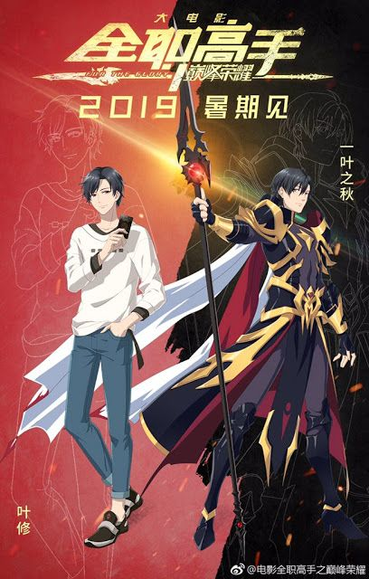
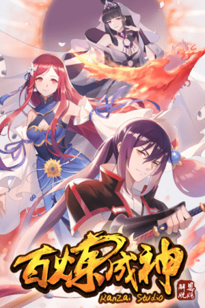

Martial Peak
A historia é sobre o humilde varredor Yang Kai que acaba de obter um livro preto, conseguindo com este algumas habilidades que acabam colocando-o no caminho para o pico do Mundo Marcial.

A historia é sobre o humilde varredor Yang Kai que acaba de obter um livro preto, conseguindo com este algumas habilidades que acabam colocando-o no caminho para o pico do Mundo Marcial.
No jogo MMO Glory, Ye Xiu é considerado um especialista, um jogador profissional de primeira linha. No entanto, devido a uma infinidade de razões, ele é expulso de sua equipe. Depois de deixar a cena profissional, ele encontra trabalho em um Internet Cafe como gerente. Quando Glory lança seu décimo servidor, ele retorna para o jogo mais uma vez. Possuindo dez anos de experiência, as memórias de seu passado e uma arma imperfeita feita por ele mesmo, seu retorno em busca do topo tem início.
Luo Zheng, agora um humilde escravo, nasceu como filho mais velho de uma família rica. Devido ao declínio de sua família, ele agora é humilhado e usado de saco de pancadas. No entanto, o céu nunca sela todas as saídas. Um livro antigo deixado por seu pai revela uma técnica divina secreta, dando ao leitor imenso poder! Mas o que está por trás desse poder? Esta é uma disputa contra o destino.
